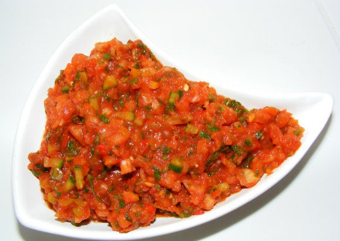

Ezme

Description
AIt’s basically a spicy tomato salad dip. The nearest thing we can think of to describe
it to you is a hot salsa dip made with the freshest of ingredients.
Ingredients
- 3 large ripe beef tomatoes
- 5 fresh chillies
- 1 large red capsicum pepper seeds removed
- 1 medium cucumber quartered lengthwise & centre removed
- 1 large onion peeled
- ½ bunch parsley
- 2 tbsp olive oil
- 1 tbsp vinegar
- 1 tbsp tomato puree
- 1 tsp dried mint
- salt for seasoning
Steps
- Place a pan of
water on the hob and bring to the boil.
- Plunge your tomatoes into the water for just under 1 minute and
then remove them and place in cold water.
- Now remove the skin from the tomatoes – it should peel
away easily because of the boiling water.
- Cut your tomatoes in half, scoop out the seeds
with a teaspoon and discard the seeds.
- Chop your tomatoes as finely as you can without them turning
to pulp and add them to a large bowl.
- Now chop the onion, pepper, chillies and cucumber as finely
as you can and add those to the tomatoes.
-
Remove the stalks from your parsley and finely chop this before
adding that to your other ingredients.
- Now add the mint, oil,
vinegar, tomato puree and salt.
- Give everything a good mix and do a taste test.
- Add more chillies if necessary (Antep ezmesi is supposed to be spicy) and, if it seems too loose,
add more salça (tomato puree), too.
- Place in the fridge
for at least one hour before serving.